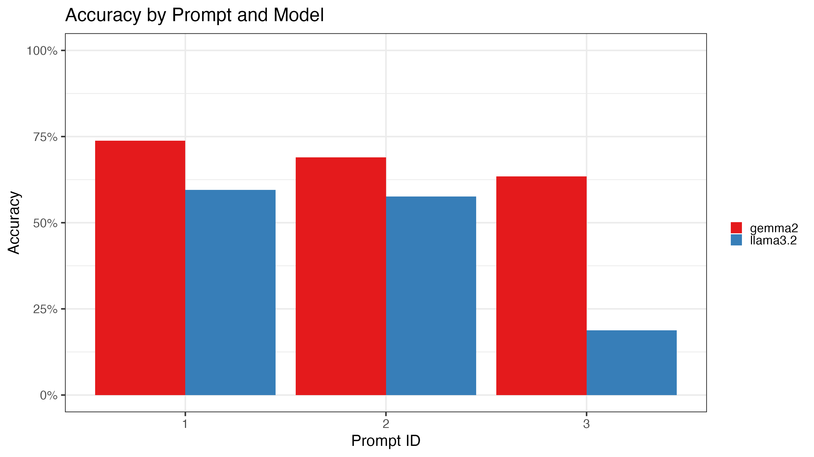
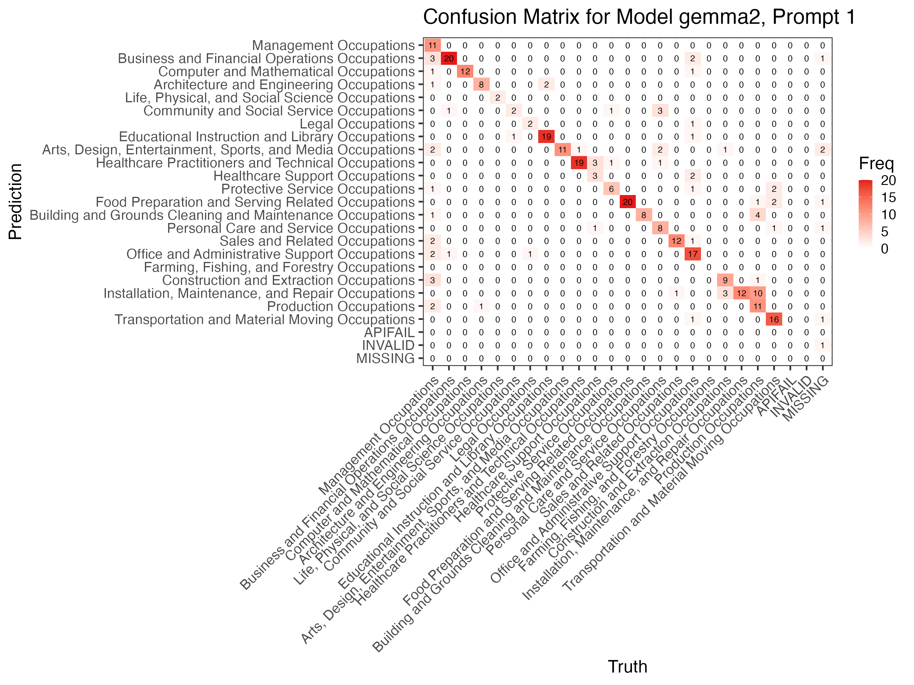

Classifying Texts with tidyllm
Source:vignettes/articles/tidyllm_classifiers.Rmd
tidyllm_classifiers.RmdClassification tasks are a key challenge when dealing with unstructured data in surveys, customer feedback, or administrative records. This article walks through a practical workflow for using tidyllm to classify open-ended text responses at scale.
A Common Classification Task
Imagine you have just collected 7,000 survey responses where people describe their jobs in their own words. Some responses are detailed, others are vague, and there is plenty of variation in between. Your goal is to categorize each response into one of the 22 two-digit occupation codes from the Bureau of Labor Statistics SOC classification system.
library(tidyllm)
library(tidyverse)
## Warning: package 'ggplot2' was built under R version 4.4.3
## Warning: package 'tibble' was built under R version 4.4.3
## Warning: package 'purrr' was built under R version 4.4.3
## Warning: package 'lubridate' was built under R version 4.4.3
library(glue)
occ_data <- read_rds("occupation_data.rds")
occ_data
## # A tibble: 7,000 × 2
## respondent occupation_open
## <int> <chr>
## 1 100019 Ops oversight and strategy
## 2 100266 Coordinating operations
## 3 100453 Making sure everything runs
## 4 100532 Building and demolition
## 5 100736 Help lawyers with cases
## 6 100910 I sell mechanical parts
## 7 101202 Librarian
## 8 101325 Operations planning and execution
## 9 101329 Bookkeeper
## 10 101367 Kitchen staff
## # ℹ 6,990 more rowsThe target categories are the 22 standard SOC codes, plus code 99 for responses that cannot be mapped to any occupation:
occ_codes <- read_rds("occ_codes_2digits.rds") |>
print(n = Inf)
## # A tibble: 22 × 2
## occ2 occ_title
## <dbl> <chr>
## 1 11 Management Occupations
## 2 13 Business and Financial Operations Occupations
## 3 15 Computer and Mathematical Occupations
## 4 17 Architecture and Engineering Occupations
## 5 19 Life, Physical, and Social Science Occupations
## 6 21 Community and Social Service Occupations
## 7 23 Legal Occupations
## 8 25 Educational Instruction and Library Occupations
## 9 27 Arts, Design, Entertainment, Sports, and Media Occupations
## 10 29 Healthcare Practitioners and Technical Occupations
## 11 31 Healthcare Support Occupations
## 12 33 Protective Service Occupations
## 13 35 Food Preparation and Serving Related Occupations
## 14 37 Building and Grounds Cleaning and Maintenance Occupations
## 15 39 Personal Care and Service Occupations
## 16 41 Sales and Related Occupations
## 17 43 Office and Administrative Support Occupations
## 18 45 Farming, Fishing, and Forestry Occupations
## 19 47 Construction and Extraction Occupations
## 20 49 Installation, Maintenance, and Repair Occupations
## 21 51 Production Occupations
## 22 53 Transportation and Material Moving OccupationsThe approach here is: classify and manually correct a sub-sample to build a ground truth, use that ground truth to experiment with prompts and models on training data, then scale the winning setup to the full dataset.
Classifying a Sub-Sample
We start by working with distinct occupation descriptions only, which eliminates duplicates and reduces the classification workload:
distinct_occupations <- occ_data |>
distinct(occupation = occupation_open)
print(distinct_occupations, n = 5)
## # A tibble: 2,209 × 1
## occupation
## <chr>
## 1 Ops oversight and strategy
## 2 Coordinating operations
## 3 Making sure everything runs
## 4 Building and demolition
## 5 Help lawyers with cases
## # ℹ 2,204 more rowsWe split off a sub-sample for manual correction using
rsample:
library(rsample)
set.seed(123)
occ_split <- initial_split(distinct_occupations, prop = 0.8)
rest_of_data <- training(occ_split)
sub_sample <- testing(occ_split)
print(sub_sample, n = 5)
## # A tibble: 442 × 1
## occupation
## <chr>
## 1 Making sure everything runs
## 2 Bartender
## 3 Post-secondary health education
## 4 Food servin
## 5 Exectutive assistant
## # ℹ 437 more rowsA Simple Sequential Classifier
The simplest approach is one message per occupation, asking the model
to reply with only the numeric code. We build a prompt for each response
with glue() and pass it through
llm_message():
numerical_code_list <- '
11 = Management Occupations
13 = Business and Financial Operations Occupations
15 = Computer and Mathematical Occupations
17 = Architecture and Engineering Occupations
19 = Life, Physical, and Social Science Occupations
21 = Community and Social Service Occupations
23 = Legal Occupations
25 = Educational Instruction and Library Occupations
27 = Arts, Design, Entertainment, Sports, and Media Occupations
29 = Healthcare Practitioners and Technical Occupations
31 = Healthcare Support Occupations
33 = Protective Service Occupations
35 = Food Preparation and Serving Related Occupations
37 = Building and Grounds Cleaning and Maintenance Occupations
39 = Personal Care and Service Occupations
41 = Sales and Related Occupations
43 = Office and Administrative Support Occupations
45 = Farming, Fishing, and Forestry Occupations
47 = Construction and Extraction Occupations
49 = Installation, Maintenance, and Repair Occupations
51 = Production Occupations
53 = Transportation and Material Moving Occupations
99 = Missing Occupation (No clear occupation)'
prompts <- glue('
Classify this occupation response from a survey: {occupation}
Pick one of the following numerical codes from this list.
Respond only with the code!
{numerical_code_list}',
occupation = sub_sample$occupation)
classification_tasks <- map(prompts, llm_message)A typical message from this list looks like this:
classification_tasks[[1]]
## Message History:
## system:
## You are a helpful assistant
## --------------------------------------------------------------
## user:
## Classify this occupation response from a survey: Making sure
## everything runs
##
## Pick one of the following numerical codes from this list.
## Respond only with the code!
##
## 11 = Management Occupations
## 13 = Business and Financial Operations Occupations
## 15 = Computer and Mathematical Occupations
## 17 = Architecture and Engineering Occupations
## 19 = Life, Physical, and Social Science Occupations
## 21 = Community and Social Service Occupations
## 23 = Legal Occupations
## 25 = Educational Instruction and Library Occupations
## 27 = Arts, Design, Entertainment, Sports, and Media
## Occupations
## 29 = Healthcare Practitioners and Technical Occupations
## 31 = Healthcare Support Occupations
## 33 = Protective Service Occupations
## 35 = Food Preparation and Serving Related Occupations
## 37 = Building and Grounds Cleaning and Maintenance
## Occupations
## 39 = Personal Care and Service Occupations
## 41 = Sales and Related Occupations
## 43 = Office and Administrative Support Occupations
## 45 = Farming, Fishing, and Forestry Occupations
## 47 = Construction and Extraction Occupations
## 49 = Installation, Maintenance, and Repair Occupations
## 51 = Production Occupations
## 53 = Transportation and Material Moving Occupations
## 99 = Missing Occupation (No clear occupation)
## --------------------------------------------------------------Before running the full sub-sample, we verify the prompt on a small
random selection. The classifier function calls
chat(claude()), extracts the reply, and converts it to a
number with parse_number():
classify_sequential <- function(occupation_open, message) {
raw_code <- message |>
chat(claude(.temperature = 0)) |>
get_reply() |>
parse_number()
tibble(occupation_open = occupation_open, occ2 = raw_code)
}
tibble(occupation_open = sub_sample$occupation, message = classification_tasks) |>
slice_sample(n = 10) |>
pmap_dfr(classify_sequential) |>
left_join(occ_codes, by = "occ2")## # A tibble: 10 × 3
## occupation_open occ2 occ_title
## <chr> <dbl> <chr>
## 1 Fine Carpentry 47 Construction and Extraction Occupations
## 2 Eyeglass makin' 51 Production Occupations
## 3 Layin' down shingles 47 Construction and Extraction Occupations
## 4 Handle construction budgets 13 Business and Financial Operations Occu…
## 5 Bodyshop guy 49 Installation, Maintenance, and Repair …
## 6 Hair dresser 39 Personal Care and Service Occupations
## 7 Sort and deliver mail 43 Office and Administrative Support Occu…
## 8 Ops oversight 11 Management Occupations
## 9 Oversee all cleaning operations 11 Management Occupations
## 10 Systems administrator 15 Computer and Mathematical OccupationsWe can also check token cost for a typical call:
classification_tasks[[1]] |>
chat(claude(.temperature = 0)) |>
get_metadata()## # A tibble: 1 × 6
## model timestamp prompt_tokens completion_tokens total_tokens stream
## <chr> <dttm> <int> <int> <int> <lgl>
## 1 claud… NA 349 5 354 FALSEAt roughly 350 prompt tokens and 5 completion tokens per message, classifying 442 distinct occupations with batch pricing costs well under a dollar.
Using the Claude Batch API
Batch processing halves the per-token cost compared to sequential
calls. We submit the full list of classification tasks with
send_batch() and save the returned job object so we can
resume after the session:
classification_tasks |>
send_batch(claude(.temperature = 0)) |>
write_rds("sub_sample_batch.rds")Check the status of the job with check_job():
## # A tibble: 1 × 6
## batch_id status req_succeeded req_errored req_expired req_canceled
## <chr> <chr> <int> <int> <int> <int>
## 1 msgbatch_015JWDHzEP… ended 442 0 0 0Once the job is done, fetch_job() returns the messages
with assistant replies. We extract each reply, parse the numeric code,
and export to Excel for manual review:
occ2_codes <- read_rds("sub_sample_batch.rds") |>
fetch_job(claude()) |>
map_chr(get_reply) |>
parse_number()
tibble(occupation_open = sub_sample$occupation, occ2 = occ2_codes) |>
left_join(occ_codes, by = "occ2") |>
writexl::write_xlsx("ground_truth_excel.xlsx")A manual review of the classifier output showed 9 corrections out of
443 classifications; an error rate of about 2% for claude()
with our simple prompt. Most issues were unclear responses like “Doin’
the numbers” that the model classified rather than marked as
missing.
At this point, with strong manual-validation performance and low cost, we could scale directly to the full dataset. The next section shows how to experiment systematically with cheaper alternatives when you are less certain.
Optimizing Classifiers
We split the manually corrected ground truth into training and test sets:
ground_truth <- readxl::read_xlsx("ground_truth_corrected.xlsx")
set.seed(123)
gt_split <- initial_split(ground_truth, prop = 0.7)
train_data <- training(gt_split)
test_data <- testing(gt_split)
print(train_data, n = 5)
## # A tibble: 309 × 3
## occupation_open occ2 occ_title
## <chr> <dbl> <chr>
## 1 Computer network technician 15 Computer and Mathematical Occupations
## 2 Educational support 25 Educational Instruction and Library Occupat…
## 3 Fine Carpentry 47 Construction and Extraction Occupations
## 4 Keep things organized 43 Office and Administrative Support Occupatio…
## 5 Group fitness instructor 39 Personal Care and Service Occupations
## # ℹ 304 more rowsA Flexible Classifier Function
To compare prompts and models systematically, we write a classifier that takes the occupation description, ground-truth code, prompt text, a prompt ID, a provider, and a model name as arguments:
classify_occupation_grid <- function(occupation, occ2, prompt, prompt_id, provider, model) {
glue("Classifying: {model} - {prompt_id} - {occupation}") |> cat("\n")
valid_codes <- as.character(occ_codes$occ2)
classification <- tryCatch({
reply <- llm_message(prompt) |>
chat(provider(.model = model, .temperature = 0)) |>
get_reply() |>
str_squish()
if (reply %in% valid_codes) as.integer(reply) else 98L
}, error = function(e) 97L)
tibble(
occupation_open = occupation,
occ2_predict = classification,
occ2_truth = occ2,
model = model,
prompt_id = prompt_id
)
}Defining the Prompt and Model Grid
We test three prompt variants against two local models run via
ollama(). llama3.2 is a fast 3B model;
gemma2 is a stronger 9B model but slower.
expand_grid() creates every combination of prompts, models,
and training rows:
prompts <- tibble(
prompt = c(
'Classify this occupation response from a survey: {occupation}
Pick one of the following numerical codes from this list.
Respond only with the code!
{numerical_code_list}',
'Classify this occupation response from a survey: {occupation}
Pick one of the following numerical codes from this list.
Respond only with the code!
{numerical_code_list}
If this does not look like a valid occupation response reply with just 99',
'Classify this occupation: {occupation}.
Respond only with one of the following codes:
{numerical_code_list}'
),
prompt_id = 1:3
)
grid <- expand_grid(train_data, prompts, model = c("llama3.2", "gemma2")) |>
arrange(model) |>
rename(occupation = occupation_open) |>
rowwise() |>
mutate(prompt = glue(prompt)) |>
ungroup() |>
select(model, occupation, occ2, prompt_id, prompt)
nrow(grid)
## [1] 1854Running the full grid:
grid_results <- grid |>
pmap_dfr(classify_occupation_grid, provider = ollama)## Classifying: gemma2 - 1 - Computer network technician
## Classifying: gemma2 - 2 - Educational support
## Classifying: gemma2 - 3 - Fine Carpentry
## Classifying: ...Note: Runs like this can take a while on laptop hardware. Saving intermediate results with
write_rds()viapwalk()protects against losing progress if something goes wrong.
Accuracy Estimates
We use yardstick to evaluate the grid results.
Factor-encoding the codes lets accuracy() work directly on
the predictions:
library(yardstick)
##
## Attaching package: 'yardstick'
## The following object is masked from 'package:readr':
##
## spec
gr_factors <- grid_results |>
mutate(across(starts_with("occ2_"),
~factor(.x,
levels = c(occ_codes$occ2, 97, 98, 99),
labels = c(occ_codes$occ_title, "APIFAIL", "INVALID", "MISSING")
)
))
accuracy <- gr_factors |>
group_by(prompt_id, model) |>
accuracy(truth = occ2_truth, estimate = occ2_predict)
accuracy |>
ggplot(aes(x = as.factor(prompt_id), y = .estimate, fill = model)) +
geom_bar(stat = "identity", position = "dodge") +
labs(title = "Accuracy by Prompt and Model", x = "Prompt ID", y = "Accuracy", fill = "") +
theme_bw(22) +
scale_y_continuous(labels = scales::label_percent(), limits = c(0, 1)) +
scale_fill_brewer(palette = "Set1")
The main findings:
- Gemma2 consistently outperforms llama3.2, but even gemma2’s best result (79.1% on Prompt 1) falls well short of Claude’s 98% accuracy on the manual validation.
- The simplified Prompt 3 hurts the smaller model disproportionately; llama3.2 drops as low as 20%, while gemma2 degrades more gracefully.
Let us look at the confusion matrix for the best gemma2 configuration to see where errors concentrate:
shorten_label <- function(x) {
x |>
str_remove(" Occupations$") |>
str_wrap(width = 20)
}
conf_mat_data <- gr_factors |>
filter(prompt_id == 1, model == "gemma2") |>
mutate(across(starts_with("occ2_"), ~fct_relabel(.x, shorten_label)))
conf_mat <- conf_mat_data |>
conf_mat(truth = occ2_truth, estimate = occ2_predict)
autoplot(conf_mat, type = "heatmap") +
scale_fill_gradient(low = "white", high = "#E41A1C") +
ggtitle("Confusion Matrix: gemma2, Prompt 1") +
theme_bw(16) +
theme(
axis.text.x = element_text(angle = 45, hjust = 1, size = 12),
axis.text.y = element_text(size = 12)
)
## Scale for fill is already present.
## Adding another scale for fill, which will replace the existing scale.
Errors cluster around management occupations and missing-occupation
cases. There is no single easy fix, which makes this a good stopping
point: we already know Claude’s 98% performance holds on unseen data, so
the practical choice is to run the full dataset through
send_batch(claude()).
Scaling Up
With the best setup validated, classifying the full dataset is a single batch submission:
all_tasks <- distinct_occupations |>
pull(occupation) |>
map(\(occ) llm_message(glue(
'Classify this occupation response from a survey: {occ}
Pick one of the following numerical codes from this list.
Respond only with the code!
{numerical_code_list}'
)))
batch_job <- all_tasks |>
send_batch(claude(.temperature = 0))
write_rds(batch_job, "full_batch_job.rds")
final_results <- read_rds("full_batch_job.rds") |>
fetch_job(claude()) |>
map_chr(get_reply) |>
parse_number()
tibble(occupation = distinct_occupations$occupation, occ2 = final_results) |>
left_join(occ_data, by = c("occupation" = "occupation_open")) |>
left_join(occ_codes, by = "occ2")For very large datasets where token cost matters,
tidyllm_schema() can classify several responses per call
using structured output, reducing prompt tokens by roughly 4-5x. Note
that grammar-constrained sampling can reduce accuracy on ambiguous
cases; verify against your benchmark before committing to this
optimization.
Conclusion
This article demonstrated a practical workflow for LLM-based text
classification with tidyllm:
- One message per item with
parse_number()is a strong, simple baseline; do not assume that adding structure automatically improves accuracy. - Batch processing via
send_batch()/fetch_job()cuts costs in half with no change to prompt logic. - A train/test split and
yardstickmetrics make model and prompt comparisons reproducible and honest. - Accuracy evaluation against a manually reviewed ground truth is essential; many apparent errors are genuinely ambiguous cases where the ontology itself is uncertain.
- Local models via
ollama()are viable for privacy-sensitive work; the 79% accuracy ofgemma2on Prompt 1 may be acceptable depending on use-case requirements.